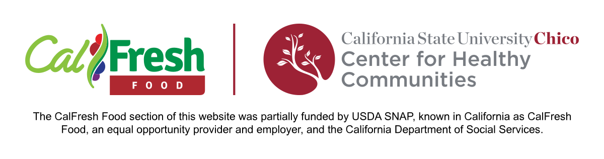

Exploration of Students Eligible for but Not Receiving CalFresh
Overview
This page provides a brief description of characteristics of 836 students that were determined to be likely eligible for CalFresh but not currently using it at the time of the survey. See the CalFresh Food Eligibility page for eligibility criteria and related survey question text. All participating college students were either in the Educational Opportunity Program (EOP) at the UC or CSU systems or in the Extended Opportunity Programs and Services (EOPS) in the CCC systems.
Of the 1341 students who were likely eligible for CalFresh, 1289 responded to a survey question inquiring about their knowledge/use of CalFresh benefits and 126 (17.8%) did not report currently using CalFresh as a college student. 55 of the 1341 students who were likely eligible for CalFresh either did not finish the survey or selected “Prefer not to answer” for this question.
Proportion of students likely eligible but not receiving CalFresh by campus
The participation distribution for these 836 likely eligible but not receiving students is the same as the overall distribution of all participating students from each of the 12 campuses. The only exceptions are Clovis Community College and Butte College. See College Campus for the distribution of all participating students.
Summary: Across participating CSU campuses 75% (528/706) of likely CalFresh eligible college students reported not currently using CalFresh. These numbers were and for CCC an UC campuses, respectively.
Age
Survey Question: What is your date of birth?
Additional Notes: Student age was determined by the difference between birth date and the time in which the survey was completed. Values were rounded down to the nearest whole number.
Summary: The average age of the students was 23.3 years with a range of 18 to 63, and a median age of 21. A total of 358 (67.8%) students were 21 or older, and 65 (12.3%) students were 30 or older. Mean ages differed between campus types, where the mean age among CSU students was 23.9, compared to NaN among CCC students, and NaN among UC students.
Gender Identity
Survey question: What is your gender identity?
Summary: A total of 428 (81.2%) students identified as a woman, 91 (17.3%) identified as a man, 5 (0.9%) identified as gender non-binary, and 3 (0.6%) identified as queer/non-conforming.
Ethnicity (i.e. Identifying with Hispanic Origin)
Survey Question: Do you identify as Hispanic or Latino or Spanish Origin?
Additional Notes: Possible answers were pulled from the U.S. Census questionnaire assessing Hispanic Origin: Mexican; Mexican American; Chicano; Puerto Rican; Cuban; another Hispanic/Latino/Spanish origin; or not of Hispanic/Latino/Spanish origin.
Summary: A total of 377 (72.5%) students self-identified as having Hispanic Origins and 143 (27.5%) students self-identified as Non-Hispanic.
First-Generation
Survey Question: This variable was derived from the question in the Parent Education section.
Additional Notes: Students who selected their parents’ education as “Less than high school,” “High school diploma or GED,” “Some college,” “Certificate or technical achievement without Associate’s degree,” or “Associate’s degree” were considered first-generation.
Summary: A total of 500 (97.8%) students reported first-generation status.
CalFresh Food - Barriers
| Reasons for Not Using CalFresh Food: | Yes (%) |
|---|---|
| I do not think I am eligible. (n = 730) | 279 (38.2%) |
| I feel other students need CalFresh more than I do. (n = 730) | 150 (20.5%) |
| No time to complete the application/ application is too long. (n = 730) | 124 (17.0%) |
| I don't need CalFresh. (n = 730) | 121 (16.6%) |
| No time to call or go to the local social services office for my CalFresh interview. (n = 730) | 95 (13.0%) |
| The application is too difficult. (n = 730) | 93 (12.7%) |
| Other (Please specify). (n = 730) | 80 (11.0%) |
| It's too difficult to get my verification documents. (n = 730) | 78 (10.7%) |
| My family or household does not want to apply for CalFresh. (n = 730) | 56 (7.7%) |
| I have heard that it's not worth my time because I won't be eligible or I won't receive much money. (n = 730) | 49 (6.7%) |
| I am embarrassed or ashamed to apply for CalFresh. (n = 730) | 44 (6.0%) |
| I feel uncomfortable receiving help with basic needs, like food. (n = 730) | 43 (5.9%) |
| The staff in my local county social services office were not helpful or supportive during my application process. (n = 730) | 40 (5.5%) |
| The CalFresh outreach team on campus was not helpful or supportive during my application process. (n = 730) | 27 (3.7%) |
| I would think less of myself if I applied for CalFresh. (n = 730) | 21 (2.9%) |
| No transportation to CalFresh office or social services office. (n = 730) | 20 (2.7%) |
| I don't want my friends to find out I'm receiving food assistance. (n = 730) | 20 (2.7%) |
| My friends and peers would think less of me if I apply for CalFresh. (n = 730) | 12 (1.6%) |
| I don't believe in social services like CalFresh, WIC, or Welfare. (n = 730) | 2 (0.3%) |
Survey Question: What are the reasons you do not have CalFresh or have never used CalFresh? (Select all that apply)
Additional Notes: Only students who reported that they Never heard of CalFresh; Heard of it, but never used it; or Used it before attending college saw this question (See CalFresh Food Status section).
Summary: The most common reason for students who were likely eligible for CalFresh Food, but reported not using CalFresh Food was because they did not think they are eligible, where 164 (36.9%) students selected this option. Meanwhile 79 (17.8%) reported that they have no time to complete the application and 82 (18.5%) students reported that they felt other students need CalFresh Food more than they do.
Other (Please Specify)
Survey question: What are the reasons you do not have CalFresh or have never used CalFresh?
Additional Notes: Table 2 includes responses from students who selected “Other” as a reason for not having or never using CalFresh.
